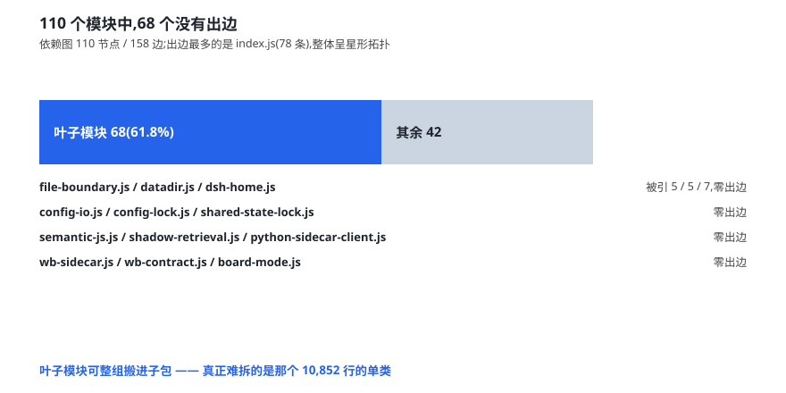

这个插件目前是一个包。它的宿主半面与浏览器半面、语义引擎与白板、团队层与日历，全部住在同一个 package.json 之下。改前端要连带上 12.5 GB 的 Python 侧，装记忆检索就得连白板看板一起装。
拆分是用户提出的诉求。本文回答三个问题：能不能拆、该按什么维度拆、真正的障碍在哪。
一 先看结构
| 维度 | 实测值 |
|---|---|
lib/ 文件数 | 110 个 .js |
lib/ 源码行数 | 68,097 行 |
lib/index.js | 18,525 行 / 1,227 KB |
lib/client.js（生成产物） | 18,857 行 / 2,133 KB |
| 两者合计 | 37,382 行 = lib/ 的 54.9% |
| 发布包体积 | 24.7 MB（243 文件） |
两个文件占去整个目录超过一半的代码量。这个比例本身就是拆分难度的指标。
二 六十八个叶子

| 指标 | 实测值 |
|---|---|
| 节点（模块） | 110 |
| 边（import 关系） | 158 |
| 零出边的叶子模块 | 68 个（61.8%） |
| 被依赖最多 | dsh-home.js (7) |
| 出边最多 | index.js (78) |
这是一个星形拓扑：中心是编排层，外围是叶子。已有若干成组的叶子模块共用同一批依赖，天然构成子包候选：
| 候选子包 | 内容 | 叶子证据 |
|---|---|---|
| 边界 | file-boundary / datadir / dsh-home / fs-retry | 被引 5 / 5 / 7 / 3，零出边 |
| 配置 | config-io / config-lock / shared-state-lock | 零出边 |
| 语义 | semantic-js / shadow-retrieval / python-sidecar-client | 零出边 |
| 白板 | wb-sidecar / wb-contract / board-mode | 零出边 |
| 团队 | team-identity / team-inject / team-transport* / team-outbox | 零出边 |
| 完整性 | degrade / evidence-store / intent-clean-safe | 零出边，被引 4 |
三 拦路的那一个类
把叶子搬走之后，剩下的还是那座山。
| 类 | 行数 | 方法数 |
|---|---|---|
| ObserverRing | 192 | 4 |
| SessionRuntimeStore | 232 | 8 |
| MemoryEngine | 10,852 | 261 |
| ExternalMemory | 5,467 | 13 |
MemoryEngine 一个类横跨一万余行。它的 261 个方法按语义分域之后，分布是这样的：写盘 17、runtime 13、白板 8、注入 7、配置 6、反思 5、检索 4、日历 3、技能 2、诊断 1——未归类 195 个。
最后一行的数字才是重点。近四分之三的方法无法归入任何功能域——它们共享状态、互相调用、边界模糊。按域拆分意味着要给这 261 个方法划出一条清晰的缝，而这条缝目前不存在。
因此可行性判断是：可拆，但这一刀不能先切这里。
四 对照组
「能不能拆」这个问题不必推演，有现成的答案。同一生态里有一个 22 子包的工程在生产运行。
| 维度 | 对照组 | 本仓 |
|---|---|---|
| 形态 | 1 个聚合包 + 22 个子包 | 1 个单包 |
聚合包 lib/index.js | 1,208 行（纯转发） | 18,525 行（全部逻辑） |
exports 子路径 | 24 个 | 4 个 |
| patch 行数 | 24 行（每族一行） | 1 行 |
| 插件面板显示 | 每族一行独立条目 | 1 行 |
宿主的多包组合机制、独立显示与独立开关，在对照组上都已得到验证。本仓可以直接套用，不需要新的运行时能力。
五 最大的陷阱
拆分过程中最需要警惕的不是打包机制，而是一处语义细节：patch 文件的 insert 是「插入一行」，不是「替换」。
同一个包被安装两次，会得到两个 id 相同的行，从而触发插件重复注册。搬迁时必须保证旧行被移除，且这一对动作要配断言守住。
| 风险 | 等级 | 缓解 |
|---|---|---|
| patch 行重复插入 ⇒ 双份注册 | 高 | 删旧与加新成对，配守卫断言 |
| 拆分单类引入跨包私有字段访问 | 高 | 前置解耦，本阶段不做 |
| 配置键迁移 | 中 | 保持路径解析口径不变即可零迁移 |
| 用户升级路径 | 中 | 保留原包作为全功能聚合包，向后兼容 |
| 回归套件的路径假设 | 中 | 拆包会大面积改路径，必须一次性改全 |
六 三阶段
按风险递增排序，路径是这样：
第一阶段，拆「宿主半面 / 浏览器半面」。零语义风险，收益最大：前端改版不再带上 Python 侧，首次安装更快。
第二阶段，把叶子模块整组包化。低风险，且前述六个候选子包都有明确的叶子证据。
第三阶段，动 MemoryEngine。高风险，须单独立项，且前置条件是完成解耦。
关于收益需要一句澄清：拆分是结构治理，不是减重。总代码量不会因此减少——它换来的是可单独开关、可单独发版、故障隔离，以及首次安装不必再拖着一个整体。
写在后面的话
「图难于其易，为大于其细。」
接到这个课题时，直觉是「先找个办法把那个大文件切开」。测绘做完才发现，问题不在刀快不快，而在缝在哪里——一个一万行的类里，近四分之三的方法无法归入任何功能域。强行切，切出来的不是模块，是碎片。
于是这份研究最终交出的不是「怎么拆那个类」，而是「先别拆它」。先搬走那六十八个叶子，先把两个半面分开，让结构自己长出缝来。
对照组还给了我们一个额外的好处：这条路已经有人走通过。可复用的不只是打包机制，还有它对「每一行可独立显示、可独立开关」这件事的坚持。
dsh-auto-memory 项目组 · 2026